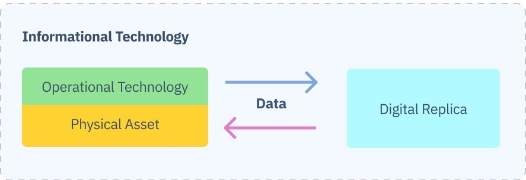
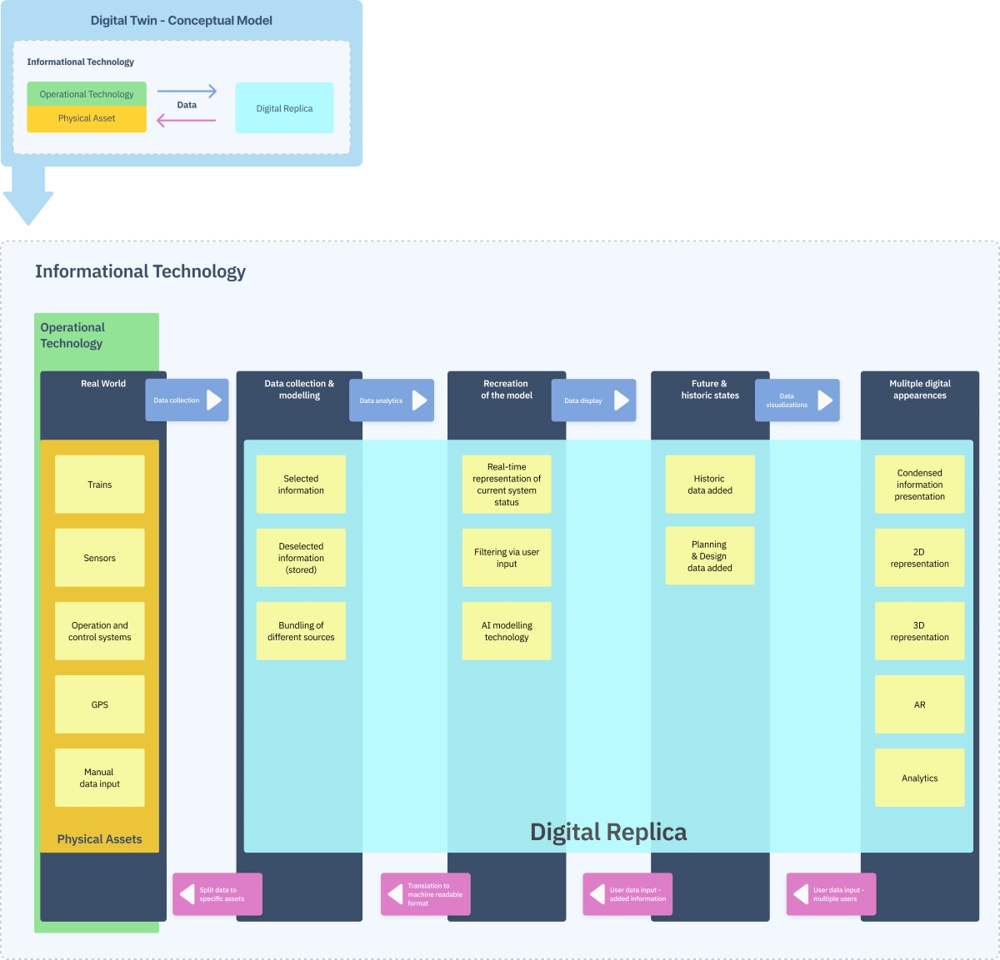

S2R Digital Twin Research Project
We'd like to ask you to support our research work for Shift2Rail by filling out a questionnaire. We will ask you to describe your daily work.
Fill out the questionnaireYour data will be kept confidential, not shared with any third parties and your individual responses will not be published.
Your input will help us to understand the context of a possible use case of digital twin technology application in the European railway system.
For more details please scroll down the page.
More Information & Research Details
Table of Contents
About Shift2Rail
We're working on a research study to support the Shift2Rail program (S2R). S2R are the main actors of the European railway system, consisting of:
- Train operators
- Signal suppliers
- Infrastructure managers
The goal of S2R is to supply knowledge, strategic background and technical agreements for its members to achieve the Single European Railway Area.
Objective of the program is the removal of remaining technical obstacles and building improved solutions with the implementation of advanced technologies.
About the Research
Specifically, we're looking for opportunities to apply digital twin concepts in these segments of the European railway industry:
- Interoperability
- Developing, certifying and authorising new systems
- Automation of systems, processes and assets
- Improvement of the operation environment
- Improvement of the test and development environment
How you can contribute
We want to understand the work experience of professionals working in the field of signal supply test scenarios, especially in the scenario of zero onsite testing (ZOST). In parallel, we will gather a more broad view on the topic by asking other experts in the related sectors like infrastructure and train operations.
-
The primary objective is to understand, visualise and outline the testing processes from the perspective of the engineers.
-
Secondary, we want to gain insight in what the engineers and managers involved in the testing workflow would suggest to improve with the help of digital twin technology.
The goal is to inform the S2R partners about strategic directions with a (hypothetical) use case. We probably won't find an actual working solution right away that can be applied immediately. But we want to get as close as possible, to base the research on hands-on experiences rather than assumptions.
We will use the methodology of user centered design practices to evaluate the findings and build one or more hypothetical case studies.
How can you support us?
- Fill out the survey. It will give us an accurate representation of how the documented IVVQ process is applied in an actual project by the engineers and engineering managers
- walk us through the test process workflow in an interview. (optionally, if your schedule allows it)
- participate in a solution and prototyping workshop.
(optionally, if your schedule allows it)
What is a Digital Twin?
Definition
A digital twin is a virtual model that describes a physical object or a system of physical objects. It is used to help manufacturers and engineers to model present, future or past states of a system or object.
The object or network of objects are producing data of core functions with the help of sensors and IoT technology. Once the virtual model is connected to the physical assets or systems, the data input can be used to run simulations, generate real time decision support for users remote or onsite, study performance issues and do root cause analysis of scenarios and prevention services.
The details of a digital twin is of course depending on the purpose of the virtual modelling system, but, in general, two given characteristics are essential:
-
There is always representation of a physical object or system as a counterpart to the virtual model, and both are interconnected via data input, processing and output operations.
-
Also, there is always a representation of the physical real-world-state, that can be extended (to future or historic states) or asynchronous but stays in some way in the loop with the virtual
model.
Use Cases for Digital Twin Technology
-
Visualize products in use, and support them with a controlled granularity of data view generated by the product in real time both for the direct users and an (optional) control unit user.
-
Build a digital thread to connect partials of systems or dispatched systems and helps with the traceability of user actions and system task flows.
-
Support the proof and refinement of assumptions with predictive analytics, both in real-time use cases as a decision making support tool as well as test out solutions early in the product
development cycle. -
Help trouble-shooting remote assets and objects
-
Integrate remote assets and objects in a system or virtual environment
-
Integrate hardware assets, objects or networks in a virtual environment
-
Manage and organise complex system-of-systems

Digital Twins vs. Simulation
The difference of a digital twin versus a simulation mainly depends on the scale of information flow:
While a simulation usually generates insights of a specific aspect in a controlled environment, the digital twin can act as a hub for multiple cases of the same or even different processes.
Simulations in general are not run with real time data input and the flow of data information is not a two-directional flow like in a digital twin application case. The data generated by the physical object is fed into the algorithms of the modelling process, changed or monitored and can be applied back to the physical world.
The fundamental difference is the bi-direction of information, making a digital twin an extension of the physical world which allows to shift back and forth in time and structure while having the representation of the real object or system running along.